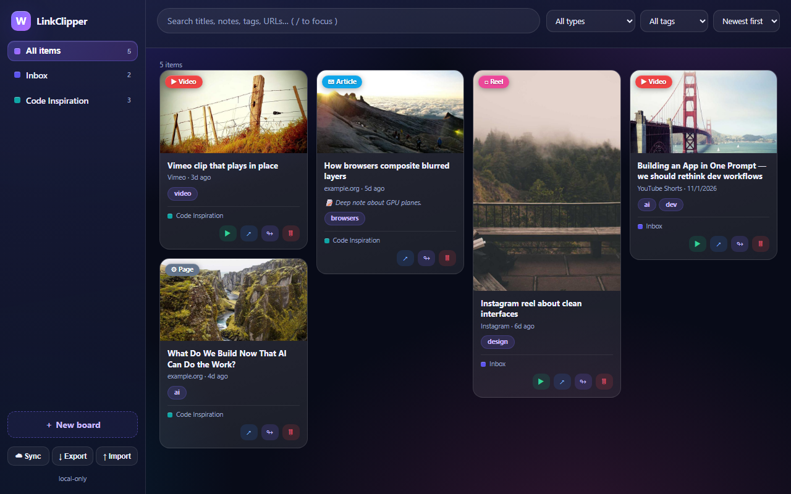
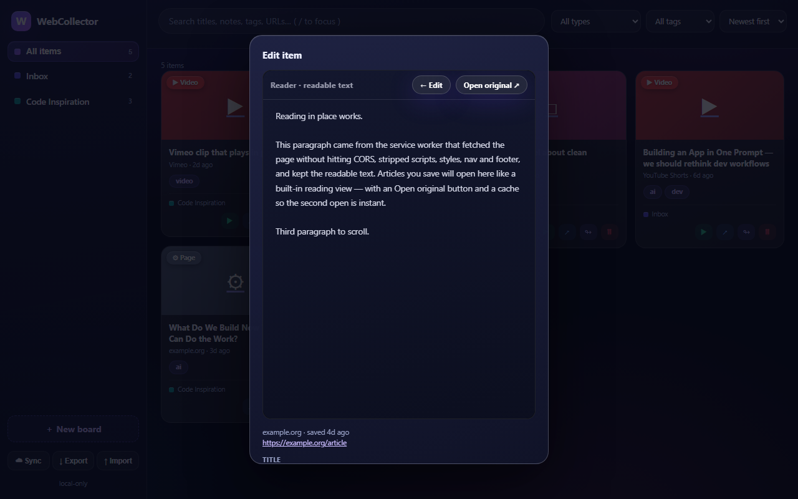
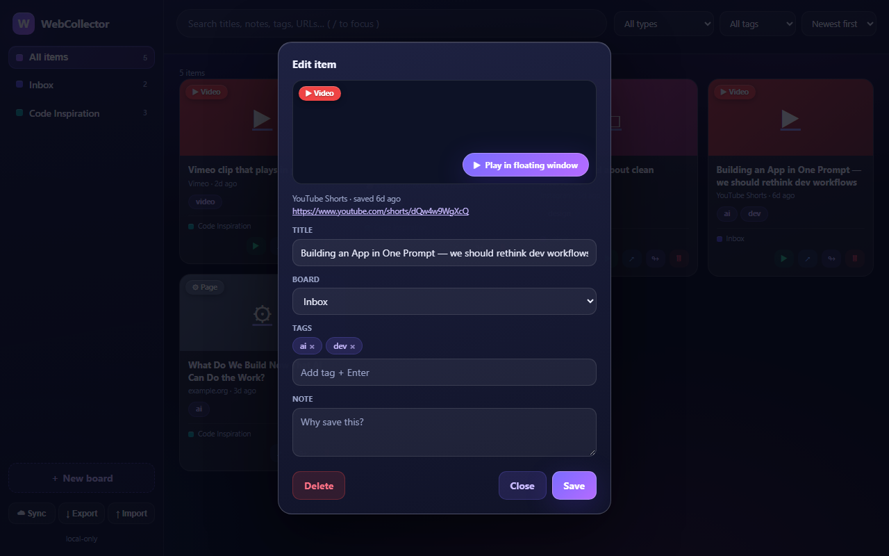

Collect YouTube Shorts, reels, videos, and articles into Pinterest-style boards as you browse — with tags, notes, instant search, and preview playback without leaving your dashboard.



Hit the toolbar icon on any page, or use the in-page save buttons we put next to videos on YouTube, Instagram, X, Reddit and TikTok.
A small W button appears right inside YouTube's action rail and list thumbnails — save without hunting for the extension icon.
Saved articles open as clean, readable text inside your dashboard. No tab juggling, no paywall-style layouts — just the words.
Reels and TikToks play inline. YouTube packs a floating mini-player you can park beside your boards. Vimeo plays right in the card.
Pinterest-style boards with colors, drag-and-drop cards, tag autocomplete and instant full-text search — titles, notes, URLs and tags.
Everything lives in your browser by default. Point it at your own Supabase project and your boards follow you to any machine — you own the data.
LinkClipper keeps your saves in local storage on your device. We (the developers) receive no data — no analytics, no accounts, no servers. Optional cloud sync talks only to your own Supabase project if you choose to set it up.
Read the privacy policy